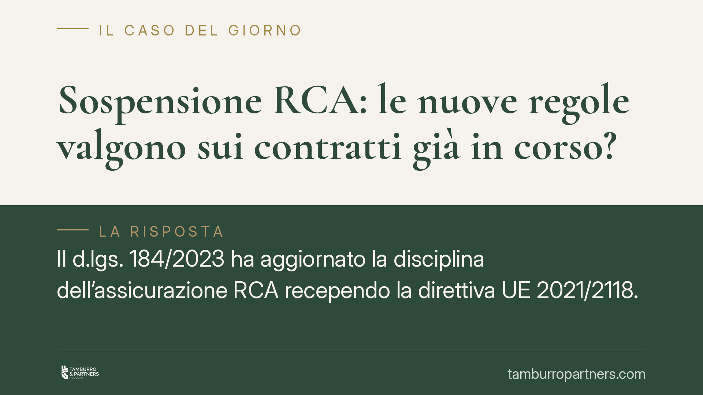

Sospensione RCA: le nuove regole valgono sui contratti già in corso?
Il d.lgs. 184/2023 ha aggiornato la disciplina dell'assicurazione RCA recependo la direttiva UE 2021/2118. Molti assicurati con una polizza sospesa si chiedono se le nuove condizioni si applichino anche ai contratti già in corso. La risposta ruota attorno al principio di irretroattività e alla distinzione tra clausole già cristallizzate ed effetti futuri dei rapporti di durata.

Il fatto
Con il d.lgs. 184/2023 il legislatore ha recepito la direttiva (UE) 2021/2118, intervenendo sul Codice delle Assicurazioni Private (d.lgs. 209/2005). La riforma tocca vari profili della responsabilità civile auto, inclusi gli obblighi informativi delle compagnie e la disciplina dei contratti.
La domanda ricorrente è concreta: chi ha sospeso la polizza — ad esempio per un veicolo fermo in garage — può vedersi applicare nuove regole al momento della riattivazione? E la compagnia può modificare unilateralmente le condizioni di una sospensione già attiva?
Inquadramento normativo
Il d.lgs. 184/2023 è stato pubblicato in Gazzetta Ufficiale a fine 2023; l'efficacia delle singole disposizioni sostanziali sulla RCA segue la scansione temporale indicata dal decreto e va verificata caso per caso, poiché non tutte le previsioni sono entrate in vigore contestualmente. È opportuno, quindi, non dare per scontata un'unica data di applicazione per l'intero corpus normativo.
Sul piano dei principi, l'art. 11 delle preleggi stabilisce che la legge non dispone che per l'avvenire: non ha effetto retroattivo. Da qui la regola di partenza: le condizioni pattuite in un contratto stipulato prima della riforma continuano a governare il rapporto secondo quanto originariamente convenuto.
La questione, però, non è così netta per i rapporti di durata. La giurisprudenza distingue tra clausole ormai "cristallizzate" — cioè effetti già prodotti o pattuiti in modo definitivo — e situazioni destinate a proiettarsi nel futuro. Sulle prime la nuova norma non incide. Sulle seconde, invece, la disciplina sopravvenuta può regolare gli effetti che maturano dopo la sua entrata in vigore, senza per questo violare l'irretroattività. Occorre quindi leggere sia il testo contrattuale sia la specifica disposizione riformata per capire dove ci si collochi.
Implicazioni pratiche
Per l'assicurato con una sospensione già in essere, la conseguenza è duplice.
Da un lato, le condizioni della sospensione pattuite prima della riforma — durata massima, modalità e costi di riattivazione previsti in polizza — restano il parametro di riferimento fino al termine concordato. La compagnia non può, come principio generale, imporre condizioni deteriori applicando retroattivamente le nuove regole a una sospensione già cristallizzata.
Dall'altro, questo divieto non è assoluto. Se il contratto contiene una clausola di *ius variandi* — la facoltà, pattuita, di modificare unilateralmente alcune condizioni — la compagnia può esercitarla nei limiti previsti dalla legge e dal contratto, con obbligo di preavviso e di informazione. Il *ius variandi* incontra limiti stringenti a tutela del consumatore e non può tradursi in una modifica arbitraria o peggiorativa priva di giustificazione.
Qui torna utile la distinzione tra riattivazione e rinnovo. La riattivazione di un contratto sospeso prosegue un rapporto già in corso: si applicano, in linea di massima, le regole originarie. Il rinnovo, invece, dà vita a un nuovo assetto negoziale, alle condizioni vigenti al momento del rinnovo: qui le nuove regole trovano naturale applicazione.
Restano fermi, in ogni caso, gli obblighi informativi rafforzati introdotti dalla riforma: la compagnia deve comunicare in modo chiaro le condizioni applicabili, così da consentire all'assicurato una scelta consapevole.
Cosa fare in concreto
- Recupera il testo della polizza e individua le clausole su sospensione, riattivazione e durata: sono il primo parametro di verifica.
- Verifica la presenza di una clausola di ius variandi e i relativi limiti; controlla se la compagnia ha rispettato preavviso e obblighi informativi.
- Distingui la tua situazione: riattivazione di un contratto sospeso (regole originarie) oppure rinnovo (condizioni nuove).
- Conserva ogni comunicazione della compagnia sulle modifiche, con date e contenuti, in vista di eventuali contestazioni.
- È opportuno valutare un reclamo formale alla compagnia e, in caso di mancato riscontro, l'inoltro all'Ivass, prima di ipotizzare iniziative giudiziali.
---
Contributo informativo a cura di Tamburro & Partners Avvocati. Non costituisce parere legale.
Ogni contratto ha il suo equilibrio.
Se vuoi una revisione delle clausole o una redazione su misura, scrivi allo studio. Ti rispondiamo entro un giorno lavorativo.